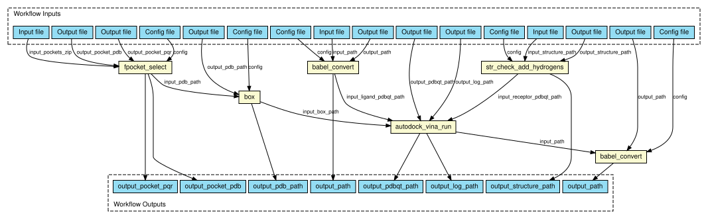

# Protein-ligand Docking tutorials using BioExcel Building Blocks (biobb) This tutorials aim to illustrate the process of **protein-ligand docking**, step by step, using the **BioExcel Building Blocks library (biobb)**. The particular examples used are based on the **Mitogen-activated protein kinase 14** (p38-α) protein (PDB code [3HEC](https://www.rcsb.org/structure/3HEC)), a well-known **Protein Kinase enzyme**, in complex with the FDA-approved **Imatinib** (PDB Ligand code [STI](https://www.rcsb.org/ligand/STI), DrugBank Ligand Code [DB00619](https://go.drugbank.com/drugs/DB00619)) and **Dasatinib** (PDB Ligand code [1N1](https://www.rcsb.org/ligand/1N1), DrugBank Ligand Code [DB01254](https://go.drugbank.com/drugs/DB01254)), small **kinase inhibitors** molecules used to treat certain types of **cancer**. The tutorials will guide you through the process of identifying the **active site cavity** (pocket) without previous knowledge, and the final prediction of the **protein-ligand complex**. *** ## Copyright & Licensing This software has been developed in the [MMB group](http://mmb.irbbarcelona.org) at the [BSC](http://www.bsc.es/) & [IRB](https://www.irbbarcelona.org/) for the [European BioExcel](http://bioexcel.eu/), funded by the European Commission (EU H2020 [823830](http://cordis.europa.eu/projects/823830), EU H2020 [675728](http://cordis.europa.eu/projects/675728)). * (c) 2015-2022 [Barcelona Supercomputing Center](https://www.bsc.es/) * (c) 2015-2022 [Institute for Research in Biomedicine](https://www.irbbarcelona.org/) Licensed under the [Apache License 2.0](https://www.apache.org/licenses/LICENSE-2.0), see the file LICENSE for details. 
{kind=link}